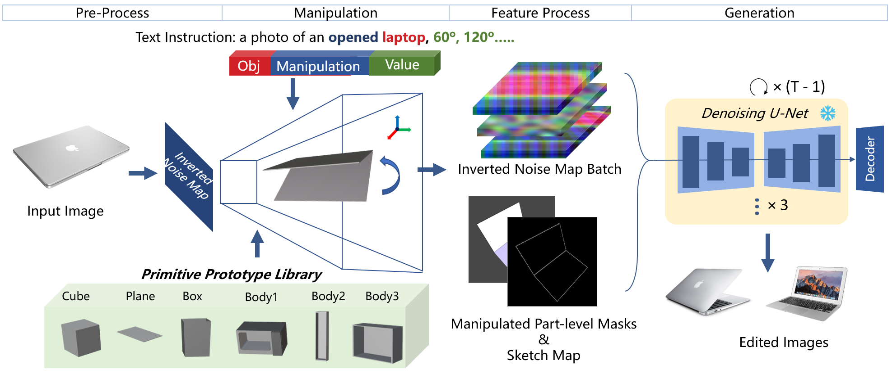
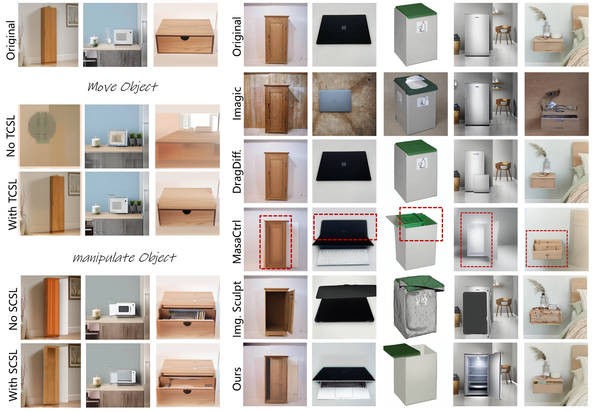
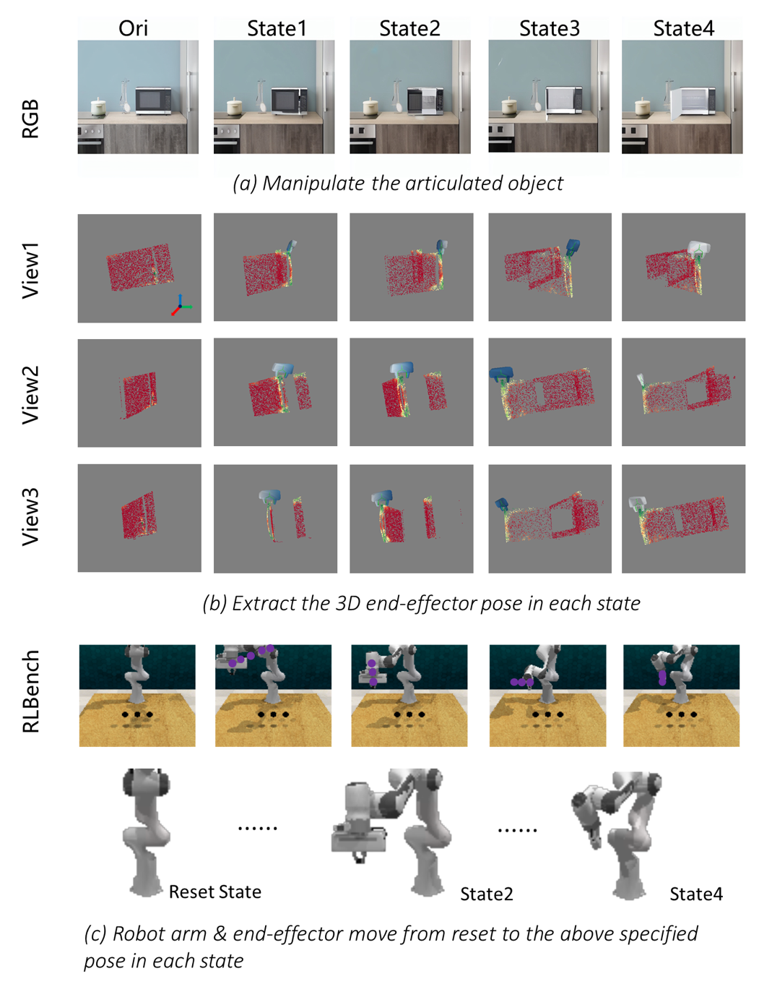

Abstract
Articulated object manipulation in real images is a fundamental step in computer and robotic vision tasks. Recently, several image editing methods based on diffusion models have been proposed to manipulate articulated objects according to text prompts. However, these methods often generate weird artifacts or even fail in real images. To this end, we introduce the Part-Aware Diffusion Model to approach the manipulation of articulated objects in real images. First, we develop Abstract 3D Models to represent and manipulate articulated objects efficiently and arbitrarily. Then we propose dynamic feature maps to transfer the appearance of objects from input images to edited ones, meanwhile generating novel views or novel-appearing parts reasonably. Extensive experiments are provided to illustrate the advanced manipulation capabilities of our method concerning state-of-the-art editing works. Additionally, we verify our method on 3D articulated object understanding for embodied robot scenarios and the promising results prove that our method supports this task strongly.
Method
The overall image editing process. (1) In the Pre-Process stage, articulated objects in 2D images are part-level segmented and reconstructed to abstract 3D models. Meanwhile, inverted noise maps of input images are created with DDIM Inversion. (2) In the Manipulation stage, arbitrary manipulation can be implemented in the 3D space based on text guidance or human interaction. (3) After manipulation, part-level masks and sketches are rendered and exported. The inverted noise maps are transformed according to these masks. (4) Finally, with the transformed inverted noise maps, sketch maps, and part-level masks, the generation model creates the edited images.
Experiment

Results of basic manipulations: move, scale/shear. rotate, and manipulate. Blank regions caused by the manipulation are in-painted. The novel views and novel-appearing parts match with the style of the seen parts (left). Objects are opened from 0◦ to 120◦. The appearance of the increasing novel-appearing parts keeps being consistent throughout the whole process (right).
TCSL and SCSL are employed to release the blurry and style mismatch problem. The model is required to move and open the object (left). Comparison of Imagic, DragDiffusion, MasaCtrl (with T2I adapter), Image Sculpting, and our PA-Diffusion Model. The target state is 'a photo of an opened object' (right).
Robotic Application
Real robotic manpulation samples are generated with the proposed PA-Diffusion model, including 2D & 3D obserations and robot arm trajectory.